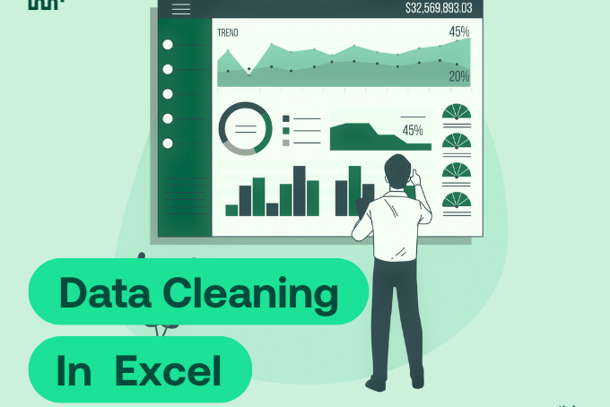
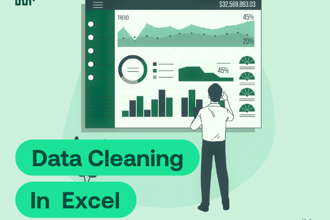

I am a data-driven professional with a Bachelor of Commerce in Information Systems and certifications in SQL for Data Science, Python Programming, and AppWorks Platform - Low Code Design. My expertise lies in cleaning, analyzing, and visualizing datasets to uncover actionable insights that drive strategic decision
My goal is to leverage my analytical and problem-solving skills to make a meaningful impact in data analytics and business intelligence, contributing to data-driven decision-making in dynamic industries
I would also like to mention that I am proficient in tools such as Power BI, Excel, and Microsoft SQL Server
 

This project involves cleaning and preparing datasets for analysis, focusing on Users, Slips, and Transaction data for three months: May, June, and July.

This project analyzes COVID-19 data from 2020 to 2021, focusing on trends in cases, recoveries, deaths, and other related statistics. The data exploration and insights generated from this project aim to provide a clear picture of the pandemic's impact across different regions
This project involves building a comprehensive Power BI dashboard for Toman Bike Share. The dashboard provides insights into key performance metrics to support informed decision-making
On this project I framed and defined the business problem using data-driven insights. Collected and sourced raw data from multiple systems, documented requirements, and ensured data quality. Cleaned and pre‑processed data by handling outliers, mixed types, missing or incorrect values, duplicates, and corrupted entries while maintaining proper referencing and context alignment. Applied data‑wrangling frameworks to meet analysis criteria and wrote reproducible Python code using appropriate software tools.